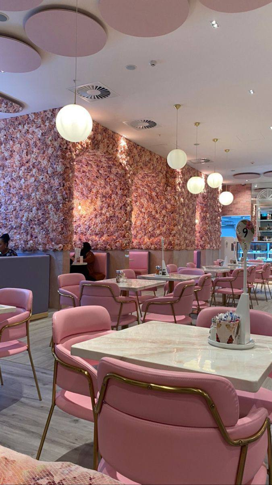

...حول المطعم
Lavender restaurant
مطعم لافندر: هو وجهة تناول الطعام الفريدة والمميزة المخصصة للفتيات فقط. يقع المطعم في موقع هادئ وساحر في الضفة الغربية في مدينة جنين ، ويتميز بديكوره الأنيق والعصري الذي يجمع بين الألوان الناعمة والتفاصيل الأنثوية
عند دخولك إلى مطعم لافندر، ستشعرين بالراحة والدفء الذي ينبعث من الأجواء الأنيقة والمريحة. يتميز المطعم بتصميمه الداخلي الذي يجمع بين الأناقة الكلاسيكية واللمسات العصرية، حيث يتخللها لمسات من اللون الأرجواني الناعم الذي يضفي جوًا ساحرًا وراقيًا على المكان.
يقدم مطعم لافندر تجربة تناول طعام متميزة، حيث يقوم الشيف رغد زيود بإعداد المأكولات الشهية بمهارة عالية وابتكار. تتميز قائمة الطعام بتشكيلة متنوعة من الأطباق اللذيذة والمبتكرة، تضم الأطباق العالمية والعربية الراقية. ستتمتعين بتجربة مذاق لا تُنسى مع كل لقمة تأخذينها.
بجانب الطعام اللذيذ، يهتم مطعم لافندر أيضًا بتقديم خدمة عالية المستوى. يتميز فريق العمل بالاحترافية والودية، حيث يسعون جاهدين لتلبية جميع احتياجاتك وراحتك أثناء تواجدك في المطعم.
بالإضافة إلى ذلك، يوفر مطعم لافندر أجواء مثالية للاسترخاء والاستمتاع بوقتك. يمكنك الاستمتاع بلحظاتك الخاصة ، وتجربة أجواء مريحة ، مما يجعل تجربتك في المطعم لافندر تجربة لا تُنسى تستحق الزيارة.
فهو المكان المثالي للاحتفالات والتجمعات الخاصة بالفتيات...
